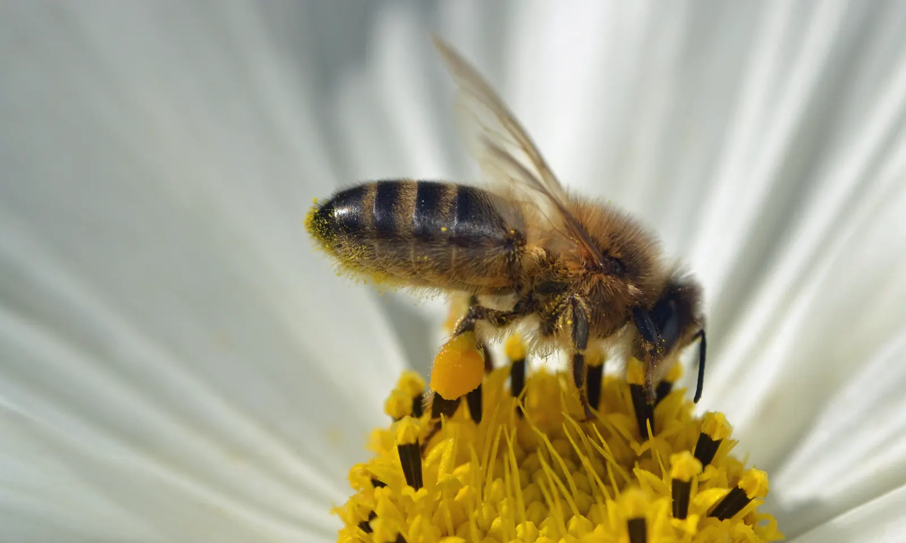
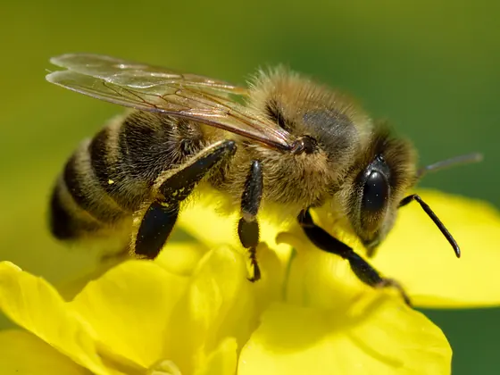

Sobre o NEP
O NEP é um projeto dedicado à preservação das abelhas e da biodiversidade. Mostra a importância das flores e da polinização para o meio ambiente e para a agricultura.

© Conall · CC BY 2.0 (abre em nova aba)Descubra quais flores alimentam as abelhas em Ubajara e em que época cada uma floresce.
Explorar as floresFloresce Este mês ()
Onde a equipe do NEP encontrou cada espécie na região de Ubajara.
Exemplo · pontos fictícios
Toque numa espécie para ver onde ela aparece.
O NEP é um projeto dedicado à preservação das abelhas e da biodiversidade. Mostra a importância das flores e da polinização para o meio ambiente e para a agricultura.

© Ivar Leidus · CC BY-SA 4.0 (abre em nova aba)Juntos fazemos a diferença!